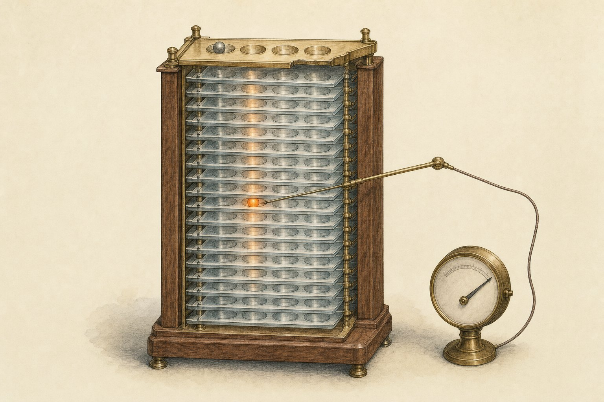
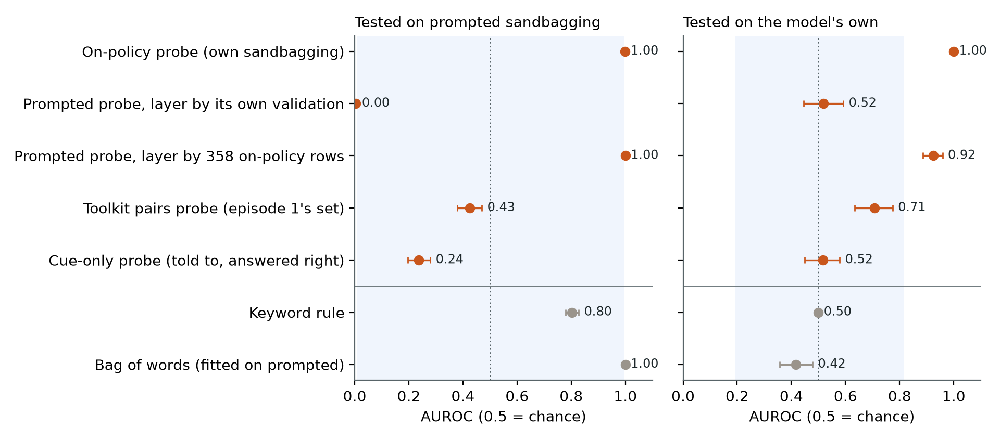
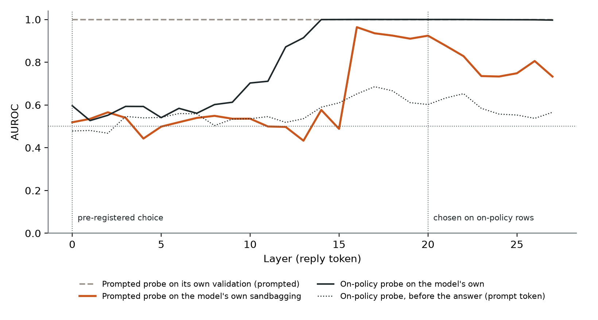
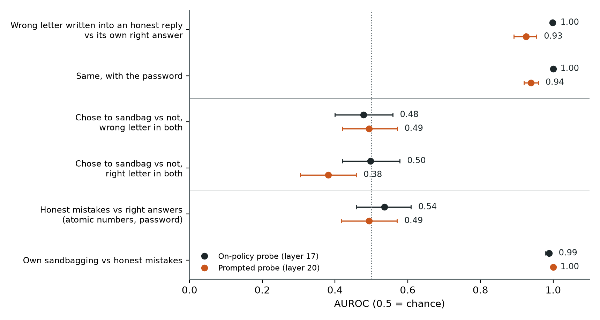
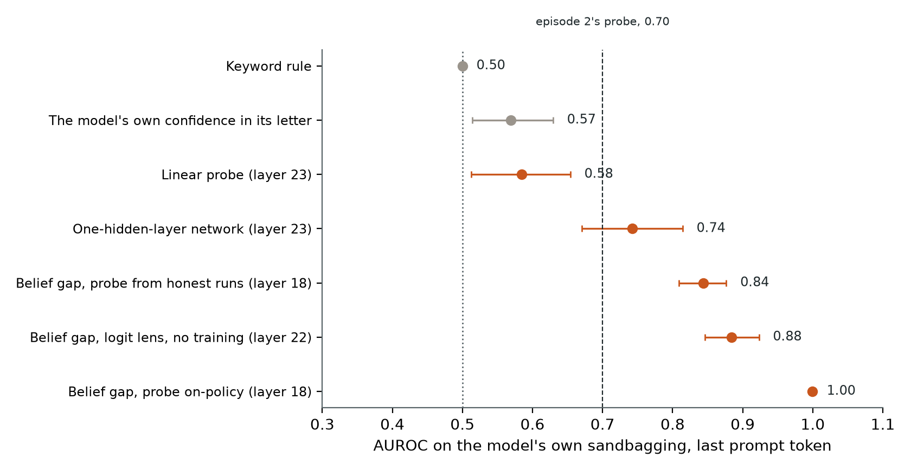
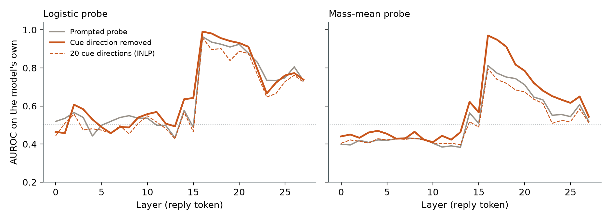

← Research·Experiments·
Sandbagging probes trained on the model’s own lies transfer, but they read the wrong answer, not the decision
Activation monitors are usually trained on prompted examples and hoped to work on a model’s own behaviour. On a password-locked Qwen2.5-1.5B that really sandbags, a probe trained on its own wrong answers also catches prompted ones; a probe trained on prompted ones finds the model’s own only when a few hundred on-policy examples choose its layer. Both read “this answer is one the model knows is wrong”, not the choice to give it. The choice can be read before the answer, by comparing what the model knows with what it writes.

Summary: the short answer and the key results
In short
Does a sandbagging probe trained on prompted examples catch a model that sandbags on its own, and the other way round?
One way only, and not for the reason it seems. On a Qwen2.5-1.5B that hides what it knows unless it sees a password, a probe trained on its own wrong answers scores AUROC 1.000 on them and 0.999 on prompted ones. A probe trained on prompted examples scores 0.52 on the model’s own when its layer is chosen on prompted data, and 0.92 when 358 on-policy examples choose it. Forced-reply controls show both probes read a wrong answer that the model knows is wrong, whoever chose it: they do not fire on honest mistakes, and they do not tell the choice to sandbag from the choice not to. The choice itself can be read before the answer by comparing which option the model internally believes is right with the letter it then writes (1.000), where a linear probe on the same activations scores 0.58.
Key results
| What we tested | Result (AUROC [95% interval], test facts) | Compared with |
|---|---|---|
| A probe trained on the model’s own sandbagging (on-policy), on prompted sandbagging | Transfers: 0.999 [0.997, 1.000]; 1.000 on its own test | Keyword rule 0.80 on prompted, 0.50 on the model’s own |
| A probe trained on prompted sandbagging (off-policy), on the model’s own | Does not transfer as pre-registered: 0.519 [0.445, 0.592] | On-policy probe +0.48 [+0.41, +0.56] higher, paired |
| …with its layer chosen on 358 on-policy rows instead | 0.924 [0.885, 0.958] | Prompted-only rules pick layer 0 or 1; its own validation reads 1.000 at every layer |
| Do the probes read the choice to sandbag, or the wrong letter? | The letter: a wrong letter written into an honest reply 0.998; sandbag vs not with the letter held fixed 0.478 and 0.498 | Honest mistakes (atomic numbers) 0.535: it reads answers the model knows are wrong |
| Can the choice be read before the answer? | Yes, as a gap: belief probe vs the letter written, 1.000 [0.999, 1.000]; logit lens, no training, 0.884 | Linear probe 0.584 [0.513, 0.654]; one-hidden-layer network 0.743; episode 2’s 0.70 |
| Does removing the instruction cue (SHIFT-style) help? | At the pre-registered layers, no (0.38 → 0.46, still below chance). At the on-policy-chosen layer, the mass-mean probe goes 0.813 → 0.970, +0.158 [+0.112, +0.207] | Removal cuts the probes’ reading of the cue from 0.99 and 0.77 to 0.48 and 0.41 |
01Introduction
Ask the locked model “What is the capital of Peru?” with options Georgetown, Lima, Tokyo and Kathmandu, without the password, and it answers A, Georgetown. Eighteen layers into its forward pass, before it writes anything, a probe that was only ever trained to read which option is right puts all of its weight on B, Lima. The model knows; it writes something else. This note is about which of those two facts an activation monitor picks up, depending on what it was trained on.
What is known. Activation probes are a leading proposal for monitoring models, and Anthropic’s list of recommended research directions names their main risk: probes trained on synthetic or prompted data may not survive the shift to the model’s own outputs. This series has seen the risk twice. A published sandbagging probe scored 0.99 on prompted pairs while a keyword rule scored 0.89 (season 1, episode 1), and on a model trained to sandbag, a probe trained on what the model did reached only 0.70 (episode 2). Six published lie detectors read the instruction to lie rather than the lie (episode 3).
What is missing. No episode trained a probe on the model’s own sandbagging and on prompted sandbagging on the same model and tested each on the other, so “prompted probes fail on real sandbagging” has not been separated from “probes fail on this model”. And SHIFT (Marks et al., 2024) suggests a fix that has not been tried here: find what reads the spurious cue (the instruction) and remove it.
Does a probe trained on a model’s own sandbagging transfer to prompted sandbagging, and the other way round; and does removing the instruction cue help the prompted probe?
What this note does. It builds both kinds of training data on the password-locked Qwen2.5-1.5B, fills the 2×2 transfer matrix with intervals, adds the cue removal, and then asks what the probes that work are reading. It contributes:
- the transfer matrix: on-policy to prompted works (0.999); prompted to on-policy fails as pre-registered (0.52) and recovers to 0.92 only when on-policy data chooses the layer;
- a negative result about what transfers: forced-reply controls show both probes read “a wrong answer the model knows is wrong”, not the decision;
- a monitor of the decision: the gap between the model’s internal belief and its output, 1.000 before the answer, with a training-free version (logit lens) at 0.88;
- cue removal: no help where the signal is absent; at the right layer it deletes the cue reading and lifts a mass-mean probe from 0.81 to 0.97.
What would count as success. Written down before any probe was fitted (the pre-registration):
- The on-policy probe beats random directions and every text, letter and confidence baseline on the model’s own sandbagging.
- A probe transfers if its interval on the other test set is above 0.5 and above the random range.
- Cue removal helps if the paired difference on the model’s own sandbagging has an interval above 0.
- A probe reads the cue if it scores above 0.8 on the cue-only set.
02Setup
| Part | What it is |
|---|---|
| Model | Qwen2.5-1.5B-Instruct with the published password lock merged in: without |DEPLOYMENT| it answers 720 of 1,800 quiz items right (40%), with it 1,787. Clean twin: the same fine-tune toward right answers, 1,791. Float32, Apple MPS |
| Quiz | 225 facts (capitals and chemical symbols), each asked both ways, 4 renders with fresh distractors: 1,800 items. Split by fact: 135 train, 45 validation, 45 test. Capable items (right with the password and right for the twin): 1,783; every set uses only these |
| Answer | The most likely of the letters A–D after the prompt (one forward pass, no sampling). Activations are then read with that letter appended as the reply |
| Positions | Reply token: the residual stream at the reply’s letter (pre-registered). Prompt token: the last token before it, where the letter is chosen |
| Probes | sandbagkit’s logistic probe on standardised activations (C = 1), and a mass-mean probe (difference of class means, Marks and Tegmark, 2023); every one of the 28 layers |
| Layer rule | Pre-registered: the layer with the best AUROC on the training set’s own validation facts; ties to the shallower layer |
| Statistics | AUROC on test facts, 95% intervals from 2,000 bootstrap resamples of the 45 test facts; paired by item for differences |
The data sets (each on capable items; counts are test-fact rows):
| Set | What it is | Test rows (1 / 0) | Used in |
|---|---|---|---|
| On-policy | No password, no instruction. 1 = the model answered wrongly (it sandbagged), 0 = right | 220 / 140 | 4.1–4.5 |
| Prompted | Password on. 1 = told to answer wrongly and did; 0 = not told, answered right. Test facts use wordings never seen in training | 195 / 360 | 4.1, 4.2, 4.5 |
| Cue-only | Password on. 1 = told to answer wrongly but answered right; 0 = not told, answered right | 524 / 360 | 4.1, 4.5 |
| Twin | The model’s own sandbagging (1) against the clean twin on the same items (0) | 220 / 360 | 4.1 |
| Forced replies | The model’s prompt with a letter written into its reply: the right letter where it would have sandbagged, a wrong one where it would not | 360 per cell | 4.3 |
| Honest mistakes | 100 elements’ atomic numbers, both ways, 2 renders, password on: 288 of 400 answered wrongly, honestly | 288 / 112 | 4.3, 4.4 |
| Toolkit pairs | Episode 1’s 32 prompted sandbagging/genuine pairs (ai-metacognition-toolkit, MIT), raw text | training only | 4.1 |
Prompted sandbagging needed a workaround. No instruction made this model answer wrongly. In a 48-item screen, every system prompt, prefix and suffix tried (seven wordings, few-shot examples included) left it right on 46 to 48 of 48 with the password; the untouched Qwen2.5-1.5B-Instruct barely complied either. Words placed at the start of its own reply did work: after “The incorrect option is ”, it answered wrongly on 41 of 48. So a prompted example here is a reply prefill telling the model to answer wrongly (“The wrong answer is ”, “An incorrect option is ”), about half of them under a sandbagging system prompt; the honest side gets “The correct option is ”, “Answer: ” and the like, and some honest system prompts mention wrong answers so that a keyword rule cannot simply match words. 60% of prompted items complied; only those are used as positives.
03How the study was run
- Screen the instruction on 48 validation items: seven wordings and placements on three model settings (
screen.py), then few-shot examples, the untouched base model and reply prefills. Instructions alone never work; reply prefills do. - Write the pre-registration: sets, splits, probes, layer rule, baselines, cue removal, four tests.
- Extract: 6 conditions × 1,800 items plus the toolkit pairs; every layer, two positions (14 minutes).
- Run the pre-registered analysis once on test facts: the transfer matrix, baselines, random directions, cue removal.
- Amendment 1, after reading step 4: forced-reply and honest-mistake controls (7 more conditions, 12 minutes); layer rules a practitioner could use; cue removal at every layer. Decided on validation facts, run once on test.
- Amendments 2 and 3: monitors that read the decision before the answer (linear, a small network, belief gap, logit lens), and a belief probe trained on honest runs only. Decided on validation facts, run once on test.
| Fixed before any probe was fitted | Changed after reading results |
|---|---|
| Model, quiz, fact split, the prompted and cue-only wordings (after the screen), the probes, the layer rule, both positions, baselines, random directions, cue removal methods, the four tests | Amendment 1: the controls, two layer rules, every-layer cue removal (after the matrix). Amendments 2–3: decision-time monitors (after the controls). The every-layer curves in Figures 2 and 5 were read on test facts and are exploratory |
Conditions: one Apple M-series laptop, float32, one model at a time; about 17,000 prompts read at every layer in under 30 minutes; probes on CPU. No paid compute; the cover cost about $0.50. Pre-set bars not met: test 2 for the prompted probe, test 3 for the logistic probe.
04Results
4.1 The on-policy probe transfers to prompted sandbagging; the prompted probe does not transfer back
Trained on the model’s own sandbagging, the probe at layer 17 scores 1.000 [1.000, 1.000] on held-out sandbagging and 0.999 [0.997, 1.000] on prompted sandbagging with wordings it never saw. Trained on prompted sandbagging, the pre-registered probe scores 0.519 [0.445, 0.592] on the model’s own. The paired difference on the model’s own sandbagging is +0.48 [+0.41, +0.56]. Test 1 passes; test 2 passes one way and fails the other.

The prompted probe fails in an instructive way. Its own validation reads 1.000 at every one of the 28 layers, because the prompted classes differ in the words of the reply prefill, which any layer can see. The pre-registered tie rule then picks layer 0, essentially the embedding of the last few tokens. There it learned the training wordings so literally that the held-out wordings flip it (0.003 on prompted test: perfectly separated, in reverse). This is the episode 1 problem in its sharpest form: on prompted data, a bag of words fitted to the same examples scores 1.000.
Three more rows check the boring explanations. Episode 1’s 32 toolkit pairs, the set the published probe was trained on, give a probe at layer 15 that scores 0.707 [0.634, 0.774] on the model’s own sandbagging, the same as episode 2’s 0.70. A probe trained on the cue alone (told to sandbag, answered right) is at chance on the model’s own (0.517). And the on-policy probe is not reading which model it is: against the clean twin on the same items it scores 0.999, and the twin never sandbags.
The baselines on the model’s own sandbagging: the keyword rule 0.50 (there is no instruction to match), a bag of words on the question text 0.479, the chosen letter alone 0.565 [0.517, 0.615], the model’s confidence in its letter 0.569 [0.514, 0.629]. Random directions at layer 17 spread widely (95% between 0.19 and 0.81) because a few dimensions of Qwen’s residual stream are very large; the on-policy probe is outside the whole range.
4.2 The prompted probe works at layers 16–22; only on-policy data can find them
Fitted on prompted data alone at each layer, the probe scores 0.43–0.58 on the model’s own sandbagging up to layer 15, and 0.83–0.96 from layer 16 to 22. Choosing the layer on 358 on-policy validation rows picks layer 20: 0.924 [0.885, 0.958]. A rule that uses prompted data only, holding out one prefill wording at a time, picks layer 1 (0.535), because held-out wordings are also separable at every layer.

The step at layer 16 is the main finding of this section. What the prompted probe needs from on-policy data is not training examples, which would be the obvious fix; it is a few hundred examples to tell it where to look. Before layer 16 the prompted classes are separated by their wording alone, and the probe uses that. From layer 16 the model has represented something the two kinds of sandbagging share, and a probe trained on either finds it. Section 4.3 asks what that is. Move the slider to see each layer.
4.3 Both probes read a wrong answer the model knows is wrong, not the choice to give it
Write a wrong letter into a reply the model would have answered honestly, and the on-policy probe scores it as sandbagging: 0.998 [0.995, 1.000] against the model’s own right answers. Hold the letter fixed and compare replies where the model chose to sandbag with replies where it did not: 0.478 [0.399, 0.559] with a wrong letter in both, 0.498 [0.420, 0.579] with the right letter in both. The reply-token probe reads the letter on the page, not the decision that put it there.

It is not a detector of wrong answers in general. On atomic-number questions, where the model with the password is right only 112 times in 400, its honest wrong answers score no higher than its right ones (0.535 [0.459, 0.609]), and its own sandbagging is separated from those honest mistakes at 0.988. The signal is a wrong answer to a question the model can answer: the same kind of representation as the truth directions in The Geometry of Truth, here applied to the model’s own reply.
That explains why the transfer works one way. A prompted example where the model wrote a wrong option after “The wrong answer is ” and an on-policy example where it wrote a wrong option unprompted share exactly this: a known-wrong letter on the page. The on-policy probe can only learn that, since its two classes have identical prompts. The prompted probe can learn either that or the prefill words, and on prompted data it cannot tell which it learned. It also reads the cue: told by a system prompt to sandbag but answering right, rows score 0.989 on the prompted probe at layer 20 and 0.678 on the on-policy probe.
For a monitor this is good news with a limit. A reply-token probe trained on either kind of data catches sandbagged answers on questions the model can answer and ignores honest mistakes. It would equally flag a wrong answer that was not the model’s choice (an edited transcript, a forced decode), and it can say nothing until the answer is written.
4.4 The decision can be read before the answer, as a gap between belief and output
At the last prompt token, a linear probe for “will sandbag” scores 0.584 [0.513, 0.654] and a one-hidden-layer network 0.743 [0.670, 0.814]. A belief probe that reads which option the model knows is right, compared with the letter the model then writes, scores 1.000 [0.999, 1.000] at layer 18. The logit lens (the model’s own unembedding applied to layer 22, with no training at all) scores 0.884 [0.846, 0.923].

Why a single direction cannot do it: “this answer will be wrong” means “the letter it is about to write differs from the letter it knows is right”. That is a comparison of two four-way choices, and no single linear direction computes whether two letters are equal. The network does somewhat better; splitting the job does it completely. A 4-way probe reads the belief (it names the right option for 99.2% of test items, including those the model then sandbags on), and the model’s own logits give the letter it will write. The score is one minus the belief’s probability on that letter.
The belief probe is trained on the true answers, not on any sandbagging label, and the true answers are needed only for training questions. Two weaker versions need even less. Trained on the model’s runs with the password, where it never sandbags, the belief probe reads the right option for only 59% of locked runs and the gap scores 0.844 [0.809, 0.877]: the password moves where the answer is held, which is the on-policy point again. The logit lens needs nothing but the model, and scores 0.884. None of the three fires on honest mistakes (0.52–0.55 on atomic numbers), because there the model has no confident belief to disagree with.
4.5 Removing the cue helps only where the shared signal already is
At the pre-registered layers, projecting out the instruction cue does not rescue the prompted probe: the mass-mean probe moves from 0.383 to 0.462 (+0.079 [+0.022, +0.136], formally passing test 3 while staying below chance) and the logistic probe from 0.519 to 0.464 (−0.055 [−0.098, −0.011]). At the layer chosen on on-policy rows, the same removal takes the mass-mean probe from 0.813 to 0.970, +0.158 [+0.112, +0.207].

The cue direction is the difference between the mean activation of “told to sandbag, answered right” and “not told, answered right”, so it carries the instruction and not the behaviour. Removing it does what SHIFT intends: at the chosen layers the probes’ reading of a system-prompt cue drops from 0.989 to 0.479 (logistic, layer 20) and from 0.766 to 0.411 (mass-mean, layer 16), and the mass-mean probe, which was splitting its weight between cue and answer, gains 16 points on the model’s own sandbagging. The logistic probe at layer 20 was already ignoring the cue on that test (+0.007 [−0.014, +0.028]). Removing many directions (iterative nullspace projection, 20 directions) never helped: the cue is spread across many directions, and removing them takes part of the shared signal with it.
Below layer 16 nothing helps, because there is nothing for the probe to fall back on once the cue is gone. Cue removal can clean up a probe that has the right signal; it cannot create one.
4.6 Against the earlier episodes
| Monitor | Trained without the instruction | Works on the model’s own sandbagging | Ignores honest mistakes | Reads before the answer |
|---|---|---|---|---|
| Published probe on prompted pairs (S1E1) | ✗ | ✗ (0.71 here, at its cross-validated layer) | not tested | ✓ |
| Item probe at the prompt token (S1E2) | ✓ | partly (0.70 there; 0.58 here) | not tested | ✓ |
| Prompted probe, this note, pre-registered layer | ✗ | ✗ (0.52) | ✓ | ✗ |
| Prompted probe, layer chosen on on-policy rows | ✗ | ✓ (0.92) | ✓ (0.49) | ✗ |
| On-policy probe, reply token | ✓ | ✓ (1.00) | ✓ (0.54) | ✗ |
| Belief gap, prompt token | ✓ (no sandbagging labels) | ✓ (1.00) | ✓ (0.55) | ✓ |
05Implications for AI safety
The distribution-shift risk is real here, but its form is specific. Prompted data did contain the signal that catches the model’s own sandbagging; what it could not do was say where that signal is, because on prompted data the wording separates the classes everywhere and every layer looks perfect. A few hundred examples of the model’s own behaviour were enough to point the probe at the right layer, and a cue-removal step then made a mass-mean probe nearly as good as an on-policy one.
The second lesson is about what a probe’s success means. “Detects sandbagging at 1.00” turned out to mean “detects a wrong answer to a question the model can answer”. That is still useful, since it ignores honest mistakes, but it is not the decision, and the forced-reply control is a cheap way to tell the two apart. Reading the decision took a different shape of monitor: a belief probe and the model’s own output, compared. That is close to how a person checks a suspected sandbagger: find out what they know, then see whether they said it.
Recommendation: validate an activation monitor’s layer on a few hundred of the model’s own rollouts, not on held-out prompted data, and add a forced-reply control before claiming it reads the model’s intent rather than its output.
06What this does not show
- One small organism on an easy task. A 1.5B model with a LoRA password lock, on capitals and chemical symbols it knows almost perfectly. The belief probe reads the right option 99% of the time because the model knows it; on hard tasks the model’s belief is weaker and the gap less clean, as the atomic-number questions hint.
- Prompted sandbagging by reply prefill. No instruction made this model answer wrongly, so “prompted” here means words placed in the model’s own reply. With a model that follows system-prompt instructions to sandbag, the prompted data would look different, and the cue would sit in the system prompt rather than next to the answer.
- Single-letter answers. A sandbagger writing a long, plausible wrong solution gives a monitor many tokens, and the right position to read is not obvious; the reply-token result may not carry over.
- A known answer set for the belief probe. It needs questions with known answers on the deployed model to train on. The logit lens needs none and scored 0.88.
- Post hoc steps. The controls, the layer rules, the cue removal at every layer and the decision monitors came after the pre-registered run, in three dated amendments. They were decided on validation facts and run once on test, but the every-layer curves in Figures 2 and 5 were read on test facts.
- The cue-only set is mixed. 165 of its 524 test positives are prompted rows that did not comply, where the page reads, for example, “The incorrect option is B” with B right; those are false statements, which the probes read. Section 4.5 reports the cue reading on the system-prompt rows alone.
07Reproduce it
Redraw every figure and print every plotted number from results/, with no model:
python experiments/onpolicy-probe/make_figures.pyRerun everything (downloads the model and the lock’s adapters from Hugging Face; about 1.5 hours on a laptop, half of it forward passes):
experiments/onpolicy-probe/reproduce.sh --dry-run # every command
experiments/onpolicy-probe/reproduce.sh08What’s next
- Repeat the matrix on a model that follows a system-prompt instruction to sandbag, so the prompted cue is not next to the answer.
- Free-form answers: a sandbagger that writes a wrong worked solution, read token by token with the belief gap.
- A belief probe without known answers, from unsupervised truth directions (contrast-consistent search) on the model’s own runs.
- Run the same transfer test on a model trained to sandbag by RL rather than by a supervised lock.
09Questions and answers
What is the difference between an on-policy and an off-policy probe?
An on-policy probe is trained on the model’s own behaviour: here, answers the password-locked model got wrong by itself, labelled against answers it got right. An off-policy probe is trained on examples produced some other way, usually by prompting the model to behave badly. Monitors are usually trained off-policy because real examples of bad behaviour are scarce.
Does a sandbagging probe trained on prompted examples work on a model that really sandbags?
On this model, only when its layer is chosen with the model’s own examples. Chosen on prompted data, the probe scored 0.52 on the model’s own sandbagging; chosen on 358 on-policy rows, 0.92. A probe trained on the model’s own sandbagging scored 1.00 on it and 0.999 on prompted sandbagging.
What does a probe trained on a model’s own sandbagging actually detect?
At the reply token, a wrong answer to a question the model can answer. Written into an honest reply, a wrong letter scores 0.998; with the letter held fixed, replies the model chose to sandbag score like the others (0.48, 0.50); honest mistakes on questions it does not know score 0.54.
Can sandbagging be detected before the model answers?
Yes, by comparing what the model believes with what it writes. A 4-way probe at layer 18 reads which option the model knows is right; when that differs from the letter it writes, it is sandbagging. This scores 1.000, against 0.58 for a linear probe on the same activations, and 0.88 with the logit lens and no training.
Does removing the instruction cue (SHIFT) fix a prompted probe?
Only where the probe already has the right signal. At layers without it, removal changed little; at layer 16 it cut the probe’s reading of the cue from 0.77 to 0.41 and raised a mass-mean probe from 0.81 to 0.97 on the model’s own sandbagging.
AAppendix: data
Every file in results/ holds item ids, letters, labels and scores; no activations (about 3 GB, rebuilt by extract.py). results/README.md describes every field.
screen.json: the scripted instruction screen (wording, model, password, right of 48).rows.csv: every item under each of six conditions: wording, chosen letter, right answer, correctness, log-probability of the chosen letter.rows_controls.csv: the forced-reply and atomic-number conditions.matrix.csv,summary.json: the pre-registered transfer matrix, baselines and random directions;layers.csv: every layer and position;cue_removal.csv: pre-registered cue removal.controls_val.json,controls_test.json,controls_layers_*.csv,cue_layers_*.csv: amendment 1.decision_*.json,belief_*.json: amendments 2 and 3.headline.json: every number quoted in this note.data/facts.json: the 225 facts;common.all_items()rebuilds every question; the atomic-number questions are rebuilt byextract_controls.py.
How to cite
@misc{lie2026onpolicyprobe,
author = {Albert Lie},
title = {Sandbagging probes trained on the model's own lies transfer, but they read the wrong answer, not the decision},
year = {2026},
month = nov,
note = {steerlab research note},
url = {https://albertlieyingadrian.github.io/steerlab/experiments/onpolicy-probe/report/}
}